RAP 프로젝트
자재·구매 업무의 RAP 애플리케이션 구현
- 프로젝트
- 자재·구매 업무의 RAP 애플리케이션 구현
- 담당 구현
- CDS 모델 · Behavior 로직 · Fiori Elements 화면
- 설계 범위
- 마스터·구매 문서와 설정 데이터를 업무 객체로 구성
- 주요 기술
- Managed RAP · Draft · EML · Validation
프로젝트 개요
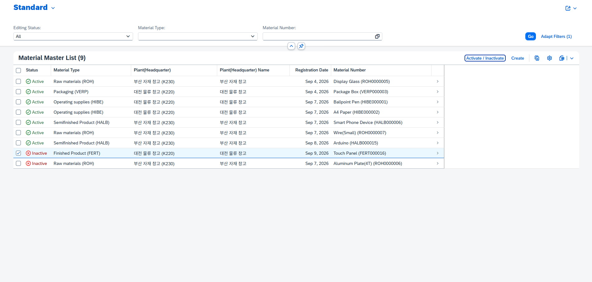
자재 마스터
마스터의 참조 관계를 유지하고, 사용 상태에 따라 편집과 입력을 제어했습니다.
설계와 구현 보기 ↗
구매정보 레코드
일부 필드만 수정해도 기존 값과 함께 수량을 비교하고, 저장 시 다시 검증합니다.
설계와 구현 보기 ↗추가 구현
구매오더
헤더 업무 번호와 부모별 품목번호의 채번 책임을 나누었습니다.
공급업체 마스터
공급업체 그룹에 맞는 번호 범위를 설정 테이블에서 조회합니다.
계정 마스터
계정과 언어별 텍스트를 모델링하고 사용 중지 Action을 정의했습니다.
계정결정 기준 관리
이동유형별 계정결정 기준과 순번 생성 로직을 구성했습니다.
싱글톤 Root에서 그룹과 언어별 설명을 관리하고, Draft 편집과 전송요청 선택을 연결합니다.
자재 마스터
목록과 상태 전환부터 입력 검증, 저장 결과까지.
상태에 맞는 편집과 일관된 마스터 관리
- 문제
- 다른 업무에서 참조하는 자재를 삭제하거나 주요 속성을 임의로 바꾸면 데이터의 연결 관계를 유지하기 어렵습니다.
- 설계 판단
- 삭제 대신 활성·비활성 상태로 관리하고, 사용 여부에 따라 수정할 수 있는 필드를 구분했습니다.
- 구현
- Instance Feature로 필드와 편집 동작을 제어했습니다. 플랜트·저장위치는 종속 검색 도움말로 연결하고, 저장 시 조합도 검증합니다.
- 01목록·상태 조회
- 02필수값 입력
- 03검색·입력 검증
- 04다국어 자재명
- 05채번·저장
목록과 상태 표시
목록의 필드·상태·Action은 UI Annotation에서 구성하고, 서비스에서 자재 엔티티를 공개합니다.

자재 목록 조회
자재 유형·플랜트·자재번호와 활성 상태를 한 화면에서 조회합니다.
관련 구현
UI Annotation으로 목록과 Action 구성코드 보기
UI Annotation으로 목록과 Action 구성
업무 Action과 상태 표현을 Metadata Extension에 분리합니다.
annotate entity zc_a18_mara with
{
@UI: { lineItem: [{ position: 05, type: #FOR_ACTION, dataAction: 'inactivate', label: 'Activate / Inactivate' }],
hidden: true
}
Loekz;
@UI: { lineItem: [{ position: 03, importance: #HIGH, label: 'Status', criticality: 'StatusCriticality', criticalityRepresentation: #WITH_ICON }] }
Status;
@UI: { selectionField: [{ element: 'Mtart', position: 10 }],
lineItem: [{ position: 10, importance: #HIGH, label: 'Material Type' }],
textArrangement: #TEXT_FIRST
}
Mtart;Projection 엔티티의 서비스 노출코드 보기
Projection 엔티티의 서비스 노출
부모 자재와 텍스트 Projection을 서비스의 공개 엔티티로 묶습니다.
@EndUserText.label: '[A18] 자재(부모) Service Definition'
define service Zui_a18_mara {
expose zc_a18_mara as Material;
expose ZC_A18_MARATEXT as MaterialDesc;
}활성·비활성 전환
자재를 삭제하는 대신 사용 상태를 전환합니다. 인스턴스 상태에 따라 필드와 Draft Edit의 허용 여부를 제어합니다.

관련 구현
활성·비활성 토글과 결과 반환코드 보기
활성·비활성 토글과 결과 반환
레코드를 유지하면서 사용 상태를 전환하는 Action 구현입니다.
METHOD inactivate.
DATA lt_update TYPE TABLE FOR UPDATE zr_a18_mara.
CLEAR lt_update.
READ ENTITIES OF zr_a18_mara IN LOCAL MODE
ENTITY Material
FIELDS ( Loekz )
WITH CORRESPONDING #( keys )
RESULT DATA(read_result).
LOOP AT read_result INTO DATA(ls_read_result).
READ TABLE keys INTO DATA(key) WITH KEY %tky = ls_read_result-%tky.
CHECK sy-subrc = 0.
CASE ls_read_result-Loekz.
WHEN space.
ls_read_result-Loekz = 'X'.
WHEN 'X'.
ls_read_result-Loekz = space.
ENDCASE.
APPEND VALUE #( %tky = ls_read_result-%tky
loekz = ls_read_result-Loekz
) TO lt_update.
ENDLOOP.
MODIFY ENTITIES OF zr_a18_mara IN LOCAL MODE
ENTITY Material
UPDATE FIELDS ( Loekz )
WITH lt_update.
READ ENTITIES OF zr_a18_mara IN LOCAL MODE
ENTITY Material
ALL FIELDS
WITH CORRESPONDING #( keys )
RESULT DATA(updated_result).
result = VALUE #(
FOR updated IN updated_result
(
%tky = updated-%tky
%param = updated
)
).
ENDMETHOD.상태에 따른 필드·Edit 제어코드 보기
상태에 따른 필드·Edit 제어
인스턴스 상태에 따라 허용하는 작업과 필드가 달라집니다.
METHOD get_instance_features.
DATA : ls_result LIKE LINE OF result.
READ ENTITIES OF zr_a18_mara IN LOCAL MODE
ENTITY Material
ALL FIELDS
WITH CORRESPONDING #( keys )
RESULT DATA(result_data)
FAILED DATA(failed_data)
REPORTED DATA(reported_data).
LOOP AT keys INTO DATA(key).
READ TABLE result_data INTO DATA(ls_result_data) WITH KEY id COMPONENTS %tky = key-%tky.
IF sy-subrc <> 0.
CONTINUE.
ENDIF.
ls_result-%tky = key-%tky.
ls_result-%features-%field-Waers = if_abap_behv=>fc-f-read_only.
IF ls_result_data-Matfi = 'X'.
ls_result-%features-%field-Bklas = if_abap_behv=>fc-f-read_only.
ls_result-%features-%field-Ersda = if_abap_behv=>fc-f-read_only.
ls_result-%features-%field-Lgort = if_abap_behv=>fc-f-read_only.
ls_result-%features-%field-Mtart = if_abap_behv=>fc-f-read_only.
ls_result-%features-%field-Werks = if_abap_behv=>fc-f-read_only.
ls_result-%features-%field-Matkl = if_abap_behv=>fc-f-read_only.
ELSEIF ls_result_data-Matfi = space.
ls_result-%features-%field-Bklas = if_abap_behv=>fc-f-unrestricted.
ls_result-%features-%field-Ersda = if_abap_behv=>fc-f-unrestricted.
ls_result-%features-%field-Lgort = if_abap_behv=>fc-f-unrestricted.
ls_result-%features-%field-Mtart = if_abap_behv=>fc-f-unrestricted.
ls_result-%features-%field-Werks = if_abap_behv=>fc-f-unrestricted.
ls_result-%features-%field-Matkl = if_abap_behv=>fc-f-unrestricted.
ENDIF.
IF ls_result_data-Loekz = 'X'.
ls_result-%action-Edit = if_abap_behv=>fc-o-disabled.
ELSE.
ls_result-%action-Edit = if_abap_behv=>fc-o-enabled.
ENDIF.
APPEND ls_result TO result.
CLEAR ls_result.
ENDLOOP.
ENDMETHOD.생성 팝업과 Draft 진입
필수 항목을 입력한 뒤 상세 편집으로 이어집니다. Behavior의 필수 필드 선언과 Draft·Prepare 구성을 함께 볼 수 있습니다.

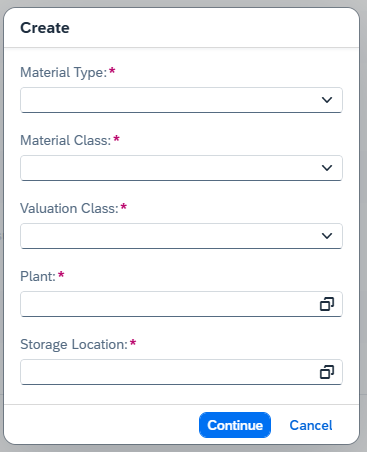
자재 생성의 필수 항목
자재 유형·자재 분류·평가클래스·플랜트·저장위치를 먼저 입력하는 생성 팝업입니다.
관련 구현
Draft와 저장 시점의 책임코드 보기
Draft와 저장 시점의 책임
저장 구조와 실행 시점을 Behavior Definition에서 연결합니다.
managed implementation in class zbp_r_a18_mara unique;
strict ( 2 );
with draft;
define behavior for zr_a18_mara alias Material
persistent table zta18mara
draft table zta18mara_d
lock master total etag LocChangedAt
authorization master ( instance )
etag master ChangedAt
{
create;
update ( features : instance );
association _MatnrDesc { create; with draft; }
field ( numbering : managed, readonly ) MatUuid;
field ( readonly ) Matnr;
field ( mandatory : create ) Matkl, Mtart, Bklas, Werks, Lgort;
field ( features : instance ) Waers, Werks, Lgort, Mtart, Bklas, Ersda, Matkl;
determination set_default_value on modify { create; }
determination realtime_message on modify { create; update; }
determination set_matnr on save { create; }
determination set_matfi on save { create; }
validation check_mandatory on save { create; update; }
validation check_duplicate on save { create; }
validation check_werks_lgort on save { create; update; }
validation check_mtart_bklas on save { create; update; }
validation check_value on save { create; update; }
validation check_child on save { create; update; }
action inactivate result [1] $self;
draft action ( features : instance ) Edit;
draft determine action Prepare
{
validation ( always ) check_child;
validation MaterialDesc~check_mandatory_c;
}
draft action Activate optimized;
draft action Discard;
draft action Resume;평가클래스와 저장위치 검색
자재 유형에 따른 평가클래스 검색과 플랜트에 따른 저장위치 검색을 확인합니다. 저장 시에는 플랜트·저장위치 조합도 검증합니다.

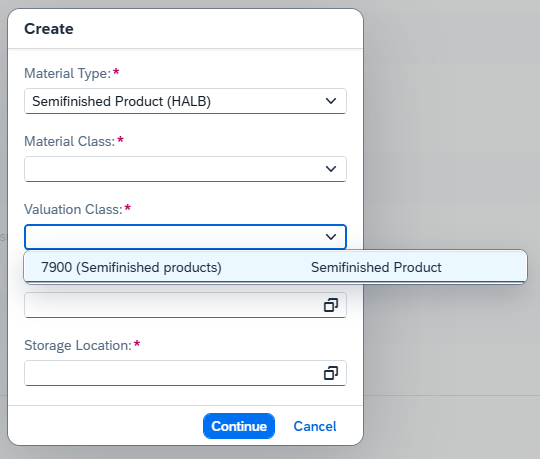
자재 유형에 맞는 평가클래스
반제품(HALB)을 선택했을 때 연결되는 평가클래스 검색 도움말입니다.
상세 화면과 처리 과정 보기 · 2장

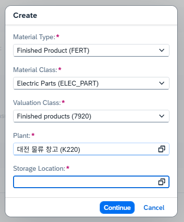
플랜트 선택 후 저장위치 입력
플랜트를 선택한 상태에서 저장위치 검색 도움말을 엽니다.

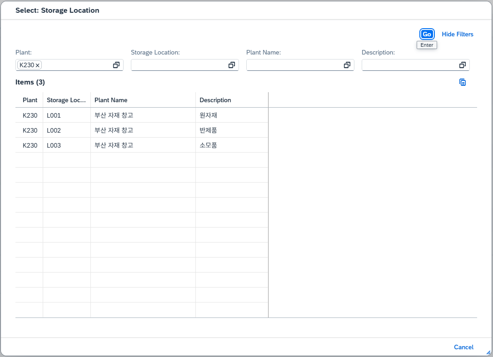
플랜트별 저장위치 검색
선택한 플랜트가 검색 조건에 반영된 저장위치 목록입니다.
관련 구현
종속 Value Help코드 보기
종속 Value Help
Mtart 값을 평가클래스 검색 조건과 결과 바인딩에 연결합니다.
@ObjectModel.text.element: [ 'BklasText' ]
@Consumption.valueHelpDefinition: [{
entity: {
name: 'ZI_A18_BKLAS_F4',
element: 'Bklas'
},
additionalBinding: [{
localElement: 'Mtart',
element: 'Mtart',
usage: #FILTER_AND_RESULT
}]
}]
Bklas,플랜트와 저장위치 조합 검증코드 보기
플랜트와 저장위치 조합 검증
허용하지 않는 조합을 저장 단계에서 차단하고 오류 필드를 지정합니다.
METHOD check_werks_lgort.
DATA ls_reported LIKE LINE OF reported-material.
CLEAR ls_reported.
READ ENTITIES OF zr_a18_mara IN LOCAL MODE
ENTITY Material
FIELDS ( Werks Lgort )
WITH CORRESPONDING #( keys )
RESULT DATA(read_result)
FAILED DATA(read_failed)
REPORTED DATA(read_reported).
CHECK read_result IS NOT INITIAL.
SELECT werks, lgort
FROM zi_a18_lgort_f4
FOR ALL ENTRIES IN @read_result
WHERE werks = @read_result-Werks
AND lgort = @read_result-Lgort
INTO TABLE @DATA(lt_werks).
LOOP AT read_result INTO DATA(ls_read_result).
IF NOT line_exists( lt_werks[ werks = ls_read_result-Werks
lgort = ls_read_result-Lgort ] ).
APPEND VALUE #( %tky = ls_read_result-%tky
%state_area = 'VALIDATE_WERKS'
) TO reported-material.
ls_reported-%element-werks = if_abap_behv=>mk-on.
ls_reported-%element-lgort = if_abap_behv=>mk-on.
APPEND VALUE #( %tky = ls_read_result-%tky ) TO failed-material.
APPEND VALUE #( %tky = ls_read_result-%tky
%state_area = 'VALIDATE_WERKS'
%msg = new_message(
id = 'ZMCA18_PRO'
number = '007'
v1 = ls_read_result-Werks
v2 = ls_read_result-Lgort
severity = if_abap_behv_message=>severity-error
)
%element = ls_reported-%element
) TO reported-material.
CLEAR ls_reported.
ENDIF.
ENDLOOP.
ENDMETHOD.입력 오류를 필드와 메시지로 안내
잘못된 자재 유형·평가클래스 조합과 누락된 필수값을 검증하고, 수정할 필드를 메시지와 함께 표시합니다.

입력 조합 오류 안내
자재 유형과 평가클래스 조합 오류를 필드와 메시지로 표시합니다.
상세 화면과 처리 과정 보기 · 1장

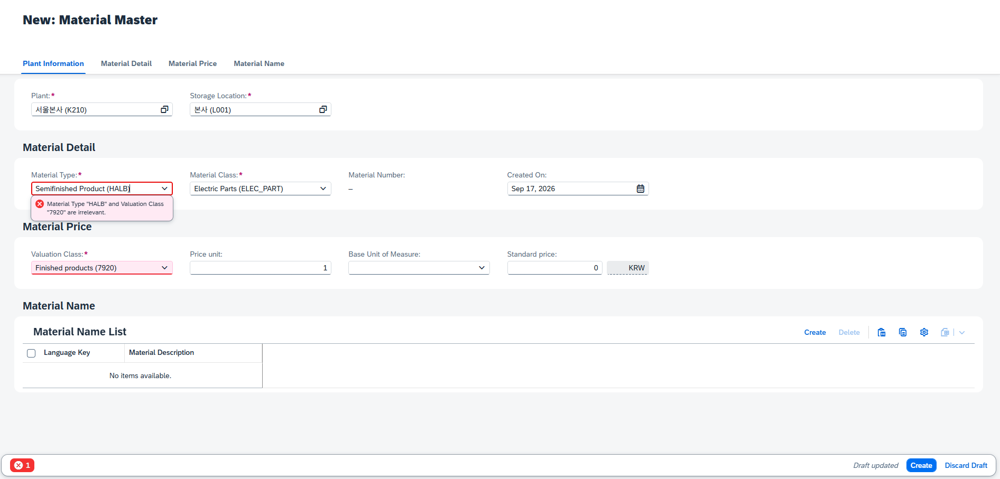
상세 화면의 입력 오류
자재 상세의 오류 필드와 메시지 표시를 확인합니다. 하단에는 아직 자재명 항목이 없는 상태가 보입니다.
관련 구현
자재 유형과 평가클래스 조합 검증코드 보기
자재 유형과 평가클래스 조합 검증
선택한 자재 유형·평가클래스를 조회하고, 오류 시 해당 필드와 메시지를 반환합니다.
METHOD check_mtart_bklas.
DATA: ls_reported LIKE LINE OF reported-material.
CLEAR ls_reported.
READ ENTITIES OF zr_a18_mara IN LOCAL MODE
ENTITY Material
FIELDS ( Mtart Bklas )
WITH CORRESPONDING #( keys )
RESULT DATA(read_result).
SELECT mtart, bklas
FROM zi_a18_bklas_f4
FOR ALL ENTRIES IN @read_result
WHERE mtart = @read_result-Mtart
AND Bklas = @read_result-Bklas
INTO TABLE @DATA(lt_mtbk).
CHECK sy-subrc <> 0.
LOOP AT read_result INTO DATA(ls_read_result).
APPEND VALUE #( %tky = ls_read_result-%tky
%state_area = 'check_mtart_bklas'
) TO reported-material.
APPEND VALUE #( %tky = ls_read_result-%tky ) TO failed-material.
ls_reported-%element-mtart = if_abap_behv=>mk-on.
ls_reported-%element-bklas = if_abap_behv=>mk-on.
APPEND VALUE #( %tky = ls_read_result-%tky
%state_area = 'check_mtart_bklas'
%msg = new_message(
id = 'ZMCA18_PRO'
number = '012'
severity = if_abap_behv_message=>severity-error
v1 = ls_read_result-Mtart
v2 = ls_read_result-Bklas
)
%element = ls_reported-%element
) TO reported-material.
CLEAR ls_reported.
ENDLOOP.
ENDMETHOD.자재 필수값과 오류 필드 반환코드 보기
자재 필수값과 오류 필드 반환
필수값이 비어 있으면 failed와 reported에 오류 인스턴스·필드를 기록합니다.
METHOD check_mandatory.
DATA: ls_reported LIKE LINE OF reported-material.
CLEAR ls_reported.
READ ENTITIES OF zr_a18_mara IN LOCAL MODE
ENTITY Material
FIELDS ( Matkl Matnr Mtart Bklas Werks Lgort )
WITH CORRESPONDING #( keys )
RESULT DATA(result_check)
FAILED DATA(failed_check)
REPORTED DATA(reported_check).
CHECK result_check IS NOT INITIAL.
LOOP AT result_check INTO DATA(ls_result_check).
CHECK ls_result_check-Matkl IS INITIAL
OR ls_result_check-Mtart IS INITIAL
OR ls_result_check-Bklas IS INITIAL
OR ls_result_check-Werks IS INITIAL
OR ls_result_check-Lgort IS INITIAL.
ls_reported-%tky = ls_result_check-%tky.
ls_reported-%msg = new_message( id = 'ZMCA18_PRO'
number = '001'
severity = if_abap_behv_message=>severity-error ).
IF ls_result_check-Matkl IS INITIAL.
ls_reported-%element-matkl = if_abap_behv=>mk-on.
ENDIF.
IF ls_result_check-Mtart IS INITIAL.
ls_reported-%element-Mtart = if_abap_behv=>mk-on.
ENDIF.
IF ls_result_check-Bklas IS INITIAL.
ls_reported-%element-bklas = if_abap_behv=>mk-on.
ENDIF.
IF ls_result_check-Werks IS INITIAL.
ls_reported-%element-werks = if_abap_behv=>mk-on.
ENDIF.
IF ls_result_check-Lgort IS INITIAL.
ls_reported-%element-lgort = if_abap_behv=>mk-on.
ENDIF.
APPEND VALUE #( %tky = ls_reported-%tky
%msg = ls_reported-%msg
%element = ls_reported-%element
) TO reported-material.
APPEND VALUE #( %tky = ls_reported-%tky ) TO failed-material.
ENDLOOP.
ENDMETHOD.언어별 자재명 추가와 검증
자재 상세에 여러 언어의 자재명을 연결합니다. 자재명 항목이 하나도 없는 경우 오류를 반환하는 검증도 함께 확인할 수 있습니다.

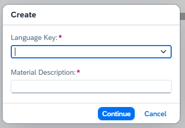
언어별 자재명 추가
언어 키와 자재명을 입력해 자재에 연결된 텍스트 항목을 추가합니다.
상세 화면과 처리 과정 보기 · 1장

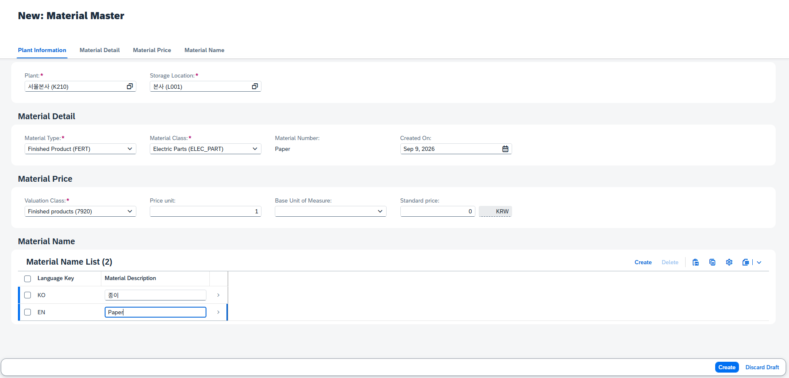
다국어 자재명 편집
상세 화면의 자재명 목록에서 언어별 설명을 편집합니다.
관련 구현
자재·언어별 텍스트의 Composition코드 보기
자재·언어별 텍스트의 Composition
부모 자재와 여러 언어의 텍스트를 하나의 업무 객체로 연결합니다.
define root view entity zr_a18_mara
as select from zi_a18_mara
composition [0..*] of ZI_A18_MARATEXT as _MatnrDesc
association [0..1] to ZI_A18_MARATEXT as _MatnrText on $projection.MatUuid = _MatnrText.MatUuid
and _MatnrText.Spras = $session.system_language
association [0..1] to zi_a18_matkl_t as _MatklText on $projection.Matkl = _MatklText.Matkl
and _MatklText.Spras = $session.system_language
association [0..1] to ZI_A18_WERKS_F4 as _WerksF4 on $projection.Werks = _WerksF4.Werks
and _WerksF4.Bukrs = 'K200'
association [0..1] to ZI_A18_LGORT_F4 as _LgortF4 on $projection.Lgort = _LgortF4.Lgort
and $projection.Werks = _LgortF4.Werks
association [0..1] to zi_a18_mtart_f4 as _MtartF4 on $projection.Mtart = _MtartF4.MaterialType
association [0..1] to zi_a18_bklas_f4 as _BklasF4 on $projection.Bklas = _BklasF4.Bklas
{자재명 항목의 존재 여부 검증코드 보기
자재명 항목의 존재 여부 검증
자재에 연결된 자재명 항목이 없는 경우 오류를 반환합니다.
METHOD check_child.
READ TABLE keys INTO DATA(key) INDEX 1.
CHECK sy-subrc = 0.
APPEND VALUE #( %tky = key-%tky
%state_area = 'check_child'
) TO reported-material.
READ ENTITIES OF zr_a18_mara IN LOCAL MODE
ENTITY Material BY \_MatnrDesc
FIELDS ( MatUuid )
WITH CORRESPONDING #( keys )
RESULT DATA(read_result).
CHECK read_result IS INITIAL.
APPEND VALUE #( %tky = key-%tky ) TO failed-material.
APPEND VALUE #( %tky = key-%tky
%state_area = 'check_child'
%msg = new_message(
id = 'ZMCA18_PRO'
number = '020'
severity = if_abap_behv_message=>severity-error
)
) TO reported-material.
ENDMETHOD.자재 생성과 저장 결과
생성된 자재번호와 언어별 자재명을 확인합니다. 업무 번호 채번 및 기본단위 검색 조건의 소스를 함께 배치했습니다.

자재 생성 완료
생성된 자재번호 FERT000017과 한국어·영어 자재명을 확인할 수 있습니다.
관련 구현
자재번호 생성과 EML 반영코드 보기
자재번호 생성과 EML 반영
기술 키 MatUuid와 업무 번호 Matnr의 생성 책임을 분리합니다.
METHOD set_matnr.
READ ENTITIES OF zr_a18_mara IN LOCAL MODE
ENTITY Material
FIELDS ( mtart matnr )
WITH CORRESPONDING #( keys )
RESULT DATA(read_result).
CHECK read_result IS NOT INITIAL.
LOOP AT read_result ASSIGNING FIELD-SYMBOL(<fs_read_result>).
IF <fs_read_result>-matnr IS NOT INITIAL OR <fs_read_result>-Mtart IS INITIAL.
CONTINUE.
ENDIF.
TRY.
zcl_a18_numbering=>prefix_numbering(
EXPORTING
iv_nr_object = 'ZA18_MATNR'
iv_nr_range = '10'
iv_subobject = CONV #( <fs_read_result>-Mtart )
IMPORTING
ev_number = DATA(lv_number)
).
MODIFY ENTITIES OF zr_a18_mara IN LOCAL MODE
ENTITY Material
UPDATE FIELDS ( Matnr )
WITH VALUE #( ( %tky = <fs_read_result>-%tky
Matnr = lv_number )
).
CATCH cx_number_ranges INTO DATA(lx_error).
APPEND VALUE #( %tky = <fs_read_result>-%tky
%msg = new_message(
id = 'ZMCA18_PRO'
number = '009'
severity = if_abap_behv_message=>severity-error
)
) TO reported-material.
ENDTRY.
ENDLOOP.
ENDMETHOD.공통 클래스의 접두어 채번코드 보기
공통 클래스의 접두어 채번
Number Range 호출과 번호 포맷을 재사용 가능한 클래스로 분리합니다.
METHOD prefix_numbering.
TRY.
cl_numberrange_runtime=>number_get(
EXPORTING
nr_range_nr = iv_nr_range
object = iv_nr_object
subobject = iv_subobject
quantity = CONV #( iv_quantity )
IMPORTING
number = DATA(lv_single_number)
returncode = DATA(lv_returncode)
).
DATA(lv_orgn) = condense( val = lv_single_number ).
DATA(lv_prefix_len) = strlen( iv_subobject ).
DATA(lv_num_len) = 10 - lv_prefix_len.
ev_number = iv_subobject && substring( val = lv_orgn
off = strlen( lv_orgn ) - lv_num_len
len = lv_num_len
).
CATCH cx_nr_object_not_found INTO DATA(lx_error).
RAISE EXCEPTION lx_error.
CATCH cx_number_ranges INTO DATA(lx_nr_error).
ENDTRY.
ENDMETHOD.사용 가능한 기본단위만 조회코드 보기
사용 가능한 기본단위만 조회
필터 테이블의 활성 상태를 Value Help 조회 조건으로 사용합니다.
define view entity zi_a18_meins_f4
as select from t006 as Meins
inner join zta18meins_f as MeinsFilter on Meins.msehi = MeinsFilter.msehi
and MeinsFilter.active = 'X'
left outer join t006a as MeinsText on Meins.msehi = MeinsText.msehi
and MeinsText.spras = $session.system_language
{
@ObjectModel.text.element: [ 'Msehl' ]
key Meins.msehi as Msehi,
@Semantics.text: true
MeinsText.msehl as Msehl
}구매정보 레코드
최소·최대 주문 수량 오류를 입력 단계에서 확인하고 수정합니다.
부분 수정까지 고려한 입력·저장 검증
- 문제
- 최소·최대 주문 수량 중 하나만 수정하면, 요청에 담긴 값만으로는 두 수량의 관계를 올바르게 비교할 수 없습니다.
- 설계 판단
- 기존 값에 실제 변경된 필드만 반영해 비교하고, 입력 중의 검증과 저장 시의 최종 검증을 나눴습니다.
- 구현
- READ ENTITIES로 읽은 값에 %control이 표시한 변경 값을 합칩니다. Precheck는 입력 중인 0 값의 수량 비교를 보류하고, 저장 Validation에서 수량 관계·음수 수량·음수 단가를 검증합니다.
- 01목록 조회
- 02공급업체·자재 선택
- 03품목 입력
- 04수량 검증·수정
- 05전체 저장
구매정보 목록과 품목 관계
공급업체·자재·구매정보 번호를 Root에 정의하고, 품목은 Composition으로 연결합니다.

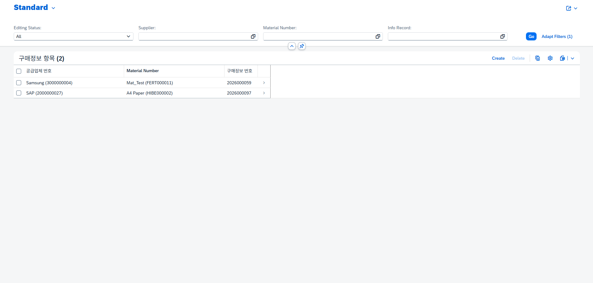
구매정보 목록
공급업체와 자재, 구매정보 번호를 함께 조회합니다.
관련 구현
구매정보와 품목의 데이터 모델코드 보기
구매정보와 품목의 데이터 모델
목록의 공급업체·자재·구매정보 번호와 하위 품목 관계를 함께 정의합니다.
define root view entity ZR_A18_EINA
as select from ZI_A18_EINA
composition [0..*] of ZI_A18_EINE as _Eine
{
key InfUuid,
Infnr,
Lifnr,
SupplierName,
Matnr,
MatnrText,
Meins,
Loekz,
Txz01,
Vabme,
VabmeText,
Mahn1,
Mahn2,
Mahn3,
@Semantics.user.createdBy: true
CreatedBy,
@Semantics.systemDateTime.createdAt: true
CreationAt,
@Semantics.user.lastChangedBy: true
ChangedBy,
@Semantics.systemDateTime.lastChangedAt: true
ChangedAt,
@Semantics.systemDateTime.localInstanceLastChangedAt: true
LocChangedAt,
/* Associations */
_Eine,
_Matnr,
_Supplier,
_Vabme
}공급업체·자재 선택과 생성
생성 팝업에서 기존 마스터 데이터를 선택합니다. 공급업체명 결과 바인딩과 자재 검색 도움말 선언을 화면 옆에서 확인할 수 있습니다.

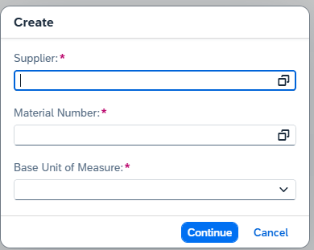
구매정보 생성 조건
공급업체·자재·기본단위를 입력하는 생성 팝업입니다.
상세 화면과 처리 과정 보기 · 2장

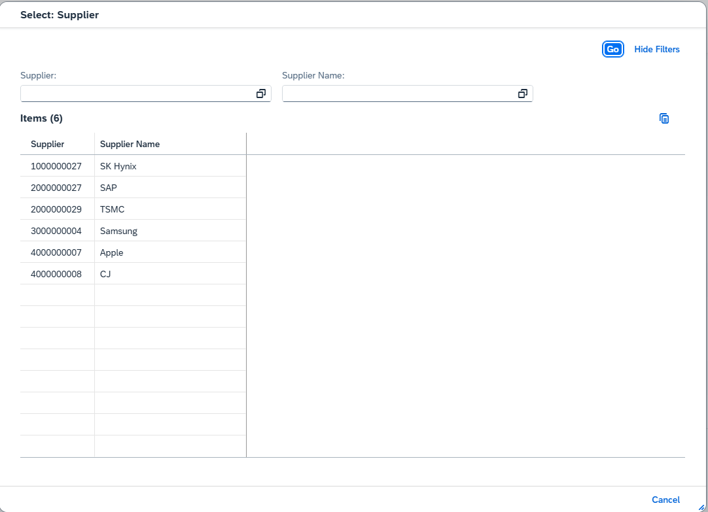
공급업체 마스터 검색
공급업체 프로그램에서 등록한 번호와 이름을 조회해 선택합니다.

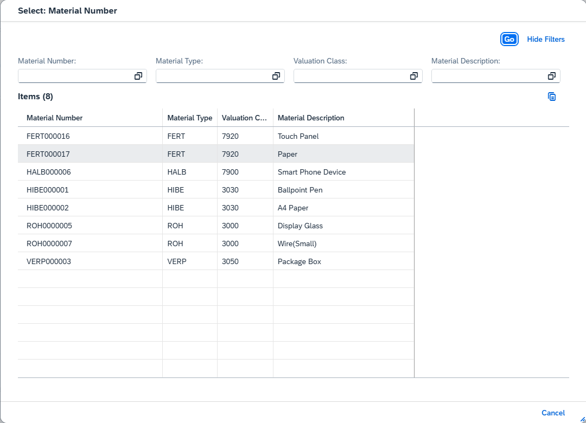
자재 마스터 검색
자재 프로그램에서 등록한 자재번호·유형·설명을 조회합니다.
관련 구현
구매정보의 공급업체·자재 검색 연결코드 보기
구매정보의 공급업체·자재 검색 연결
공급업체·자재 검색 도움말과 공급업체명 결과 바인딩을 연결합니다.
define root view entity ZC_A18_EINA
provider contract transactional_query
as projection on ZR_A18_EINA
{
key InfUuid,
Infnr,
@Consumption.valueHelpDefinition: [{
entity: {
name: 'ZI_A18_LIFNR_F4',
element: 'Lifnr'
},
additionalBinding: [{
localElement: 'SupplierName',
element: 'Name1',
usage: #RESULT
}]
}]
@ObjectModel.text.element: [ 'SupplierName' ]
@UI.textArrangement: #TEXT_FIRST
Lifnr as Lifnr,
@Semantics.text: true
@EndUserText.label: 'Supplier Name'
SupplierName,
@Consumption.valueHelpDefinition: [{
entity: {
name: 'ZI_A18_MATNR_F4',
element: 'Matnr'
}
}]
@ObjectModel.text.element: [ 'MatnrText' ]
@UI.textArrangement: #TEXT_FIRST
Matnr,
@Semantics.text: true
MatnrText,
@Consumption.valueHelpDefinition: [{
entity: {
name: 'zi_a18_meins_f4',
element: 'Msehi'
}
}]
@Semantics.unitOfMeasure: true
@UI.textArrangement: #TEXT_FIRST
Meins,
@Semantics.booleanIndicator: true
Loekz,
Txz01,
@Consumption.valueHelpDefinition: [{
entity: {
name: 'ZI_A18_VABME_F4',
element: 'Vabme'
}
}]
@ObjectModel.text.element: [ 'VabmeText' ]
@UI.textArrangement: #TEXT_ONLY
Vabme,
@Semantics.text: true
VabmeText,
Mahn1,
Mahn2,
Mahn3,
@Semantics.user.createdBy: true
CreatedBy,
@Semantics.systemDateTime.createdAt: true
CreationAt,
@Semantics.user.lastChangedBy: true
ChangedBy,
@Semantics.systemDateTime.lastChangedAt: true
ChangedAt,
@Semantics.systemDateTime.localInstanceLastChangedAt: true
LocChangedAt,
/* Associations */
_Eine : redirected to composition child ZC_A18_EINE,
_Matnr,
_Supplier,
_Vabme
}주문 수량 오류와 수정
최소 100·최대 50의 오류 화면과 최대 500으로 수정한 화면입니다. Precheck와 저장 시 재검증 코드를 함께 배치했습니다.
최소 수량보다 작은 최대 수량
최소 100, 최대 50을 입력했을 때 오류가 표시된 화면입니다.
상세 화면과 처리 과정 보기 · 1장

주문 수량 수정
최대 수량을 500으로 수정한 뒤 입력 상태를 확인합니다.
관련 구현
부분 UPDATE에서 최종 비교값 구성코드 보기
부분 UPDATE에서 최종 비교값 구성
생략된 필드를 0으로 간주하지 않고 현재 엔티티 값으로 보완합니다.
METHOD precheck_update.
DATA : ls_reported LIKE LINE OF reported-purchaseinfochild.
CLEAR ls_reported.
READ ENTITIES OF zr_a18_eina IN LOCAL MODE
ENTITY PurchaseInfoChild
ALL FIELDS WITH VALUE #( FOR entity IN entities (
%tky = entity-%tky
) )
RESULT DATA(read_result).
LOOP AT entities INTO DATA(ls_entity).
DATA(lv_failed) = abap_false.
IF ls_entity-%control-Minbm <> if_abap_behv=>mk-on
AND ls_entity-%control-Bstma <> if_abap_behv=>mk-on
AND ls_entity-%control-Netpr <> if_abap_behv=>mk-on.
CONTINUE.
ENDIF.
READ TABLE read_result INTO DATA(ls_read_result) WITH KEY %tky = ls_entity-%tky.
IF sy-subrc <> 0.
CONTINUE.
ENDIF.
DATA(lv_bstma) = ls_read_result-Bstma.
DATA(lv_minbm) = ls_read_result-Minbm.
DATA(lv_netpr) = ls_read_result-Netpr.
IF ls_entity-%control-Bstma = if_abap_behv=>mk-on.
lv_bstma = ls_entity-Bstma.
ENDIF.
IF ls_entity-%control-Minbm = if_abap_behv=>mk-on.
lv_minbm = ls_entity-Minbm.
ENDIF.
IF ls_entity-%control-Netpr = if_abap_behv=>mk-on.
lv_netpr = ls_entity-Netpr.
ENDIF.
IF ( ls_entity-%control-Minbm = if_abap_behv=>mk-on
OR ls_entity-%control-Bstma = if_abap_behv=>mk-on )
AND lv_minbm IS NOT INITIAL
AND lv_bstma IS NOT INITIAL
AND lv_minbm > lv_bstma.
lv_failed = abap_true.
APPEND VALUE #(
%tky = ls_read_result-%tky
%op-%update = if_abap_behv=>mk-on
%path = VALUE #(
PurchaseInfoParent-%is_draft = ls_read_result-%is_draft
PurchaseInfoParent-InfUuid = ls_read_result-%key-InfUuid )
%msg = new_message(
id = 'ZMCA18_PRO'
number = '021'
severity = if_abap_behv_message=>severity-error
v1 = 'Maximum Order Quantity'
v2 = 'Minimum Qty' )
%element-Bstma = if_abap_behv=>mk-on
%element-Minbm = if_abap_behv=>mk-on )
TO reported-purchaseinfochild.
ENDIF.저장 시 재검증과 상태 메시지 초기화코드 보기
저장 시 재검증과 상태 메시지 초기화
입력 단계와 저장 단계의 메시지 역할을 구분합니다.
APPEND VALUE #( %tky = ls_read_result-%tky
%state_area = 'Quantity_Error' )
TO reported-purchaseinfochild.
APPEND VALUE #( %tky = ls_read_result-%tky
%state_area = 'Quantity_Error2' )
TO reported-purchaseinfochild.
APPEND VALUE #( %tky = ls_read_result-%tky
%state_area = 'Currency_Error' )
TO reported-purchaseinfochild.
DATA(lv_failed) = abap_false.
IF ls_read_result-Minbm > ls_read_result-Bstma.
lv_failed = abap_true.
APPEND VALUE #(
%tky = ls_read_result-%tky
%path = VALUE #(
PurchaseInfoParent-%is_draft = ls_read_result-%is_draft
PurchaseInfoParent-InfUuid = ls_read_result-%key-InfUuid )
%state_area = 'Quantity_Error'
%msg = new_message(
id = 'ZMCA18_PRO'
number = '021'
severity = if_abap_behv_message=>severity-error
v1 = 'Maximum Order Quantity'
v2 = 'Minimum Qty' )
%element-Bstma = if_abap_behv=>mk-on
%element-Minbm = if_abap_behv=>mk-on )
TO reported-purchaseinfochild.
ENDIF.
IF ls_read_result-Bstma < 0 OR ls_read_result-Minbm < 0.
lv_failed = abap_true.
APPEND VALUE #(
%tky = ls_read_result-%tky
%path = VALUE #(
PurchaseInfoParent-%is_draft = ls_read_result-%is_draft
PurchaseInfoParent-InfUuid = ls_read_result-%key-InfUuid )
%state_area = 'Quantity_Error2'
%msg = new_message(
id = 'ZMCA18_PRO'
number = '017'
severity = if_abap_behv_message=>severity-error )
%element-Bstma = COND #( WHEN ls_read_result-Bstma < 0
THEN if_abap_behv=>mk-on )
%element-Minbm = COND #( WHEN ls_read_result-Minbm < 0
THEN if_abap_behv=>mk-on ) )
TO reported-purchaseinfochild.
ENDIF.
IF ls_read_result-Netpr < 0.
lv_failed = abap_true.
APPEND VALUE #(
%tky = ls_read_result-%tky
%path = VALUE #(
PurchaseInfoParent-%is_draft = ls_read_result-%is_draft
PurchaseInfoParent-InfUuid = ls_read_result-%key-InfUuid )
%state_area = 'Currency_Error'
%msg = new_message(
id = 'ZMCA18_PRO'
number = '005'
severity = if_abap_behv_message=>severity-error )
%element-Netpr = if_abap_behv=>mk-on )
TO reported-purchaseinfochild.
ENDIF.
IF lv_failed = abap_true.
APPEND VALUE #( %tky = ls_read_result-%tky )
TO failed-purchaseinfochild.
ENDIF.
ENDLOOP.
ENDMETHOD.입력 변경 시 메시지 갱신 선언코드 보기
입력 변경 시 메시지 갱신 선언
메시지 갱신 대상을 projection behavior에도 연결합니다.
side effects
{
field Meins affects messages;
field Lifnr affects messages;
field Matnr affects messages;
}품목을 연결해 전체 구매정보 저장
상세 화면에서 품목을 추가하고 저장 전후의 구매정보 번호·품목·목록을 확인합니다. 부모·자식 Behavior의 생성과 검증 선언을 함께 보여줍니다.

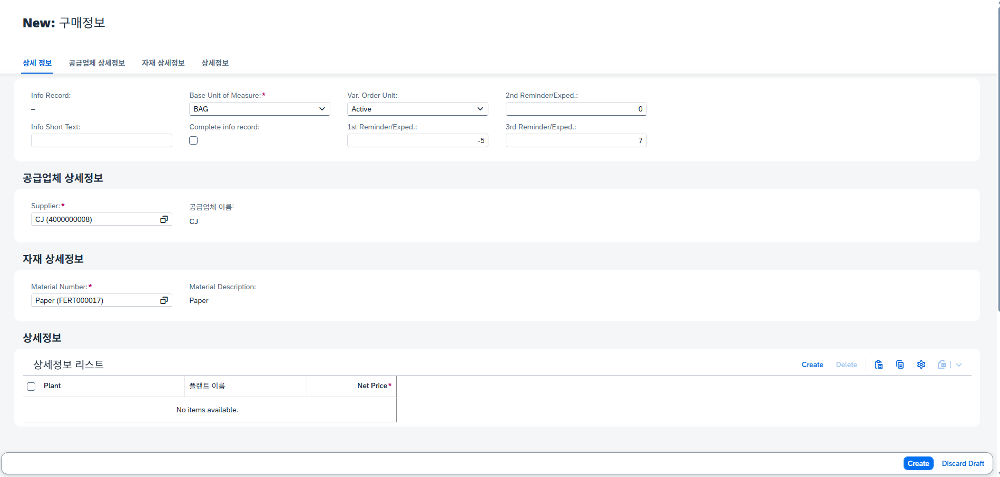
구매정보 상세 입력
공급업체와 자재 정보 아래에 하위 품목을 추가하는 상세 화면입니다.
상세 화면과 처리 과정 보기 · 3장

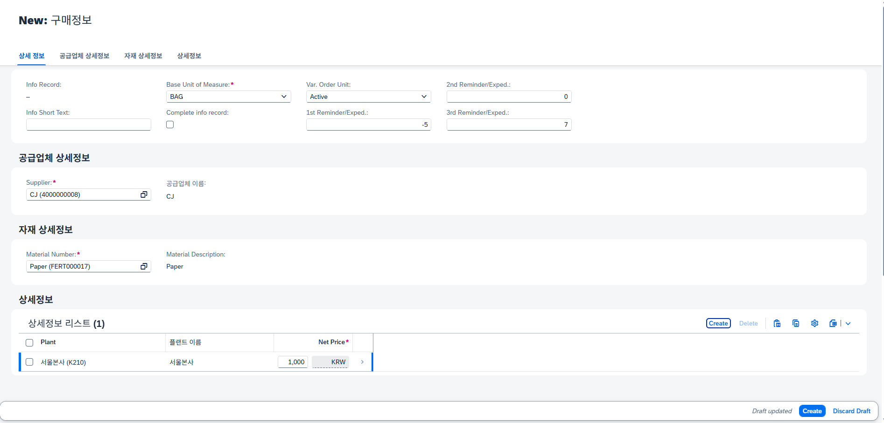
품목이 연결된 저장 전 화면
상세 화면에서 추가한 품목을 확인하고 Create로 전체 구매정보를 저장합니다.

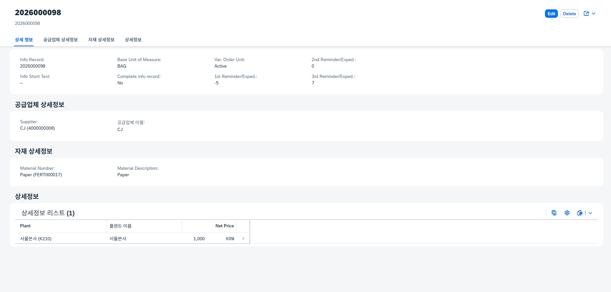
저장된 구매정보 상세
발급된 구매정보 번호와 연결된 품목을 상세 화면에서 확인합니다.

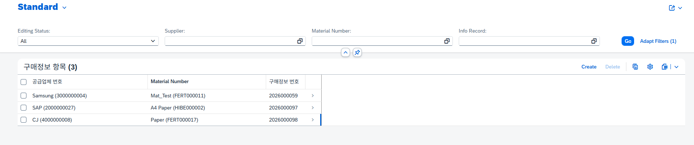
생성 후 목록 확인
추가된 공급업체·자재 조합과 구매정보 번호를 확인합니다.
관련 구현
Precheck·Validation 연결코드 보기
Precheck·Validation 연결
부분 수정 검증과 CREATE / SAVE 검증의 실행 지점을 선언합니다.
define behavior for ZI_A18_EINE alias PurchaseInfoChild
persistent table zta18eine
draft table zta18eine_d
lock dependent by _Eina
authorization dependent by _Eina
{
update ( precheck );
delete;
field ( readonly : update ) werks;
field ( readonly ) InfUuid, WerksName;
field ( mandatory ) Netpr, Bstma, Minbm;
field ( features : instance ) Waers, Meins;
association _Eina { with draft; }
determination set_werksname on modify { field werks; }
determination set_default_value on modify { create; }
determination set_defaults on modify { create; }
validation check_values on save { create; update; }구매오더
구매 문서와 품목을 연결하고, 저장된 문서 정보를 확인합니다.
- 01헤더 입력
- 02공급업체 선택
- 03구매정보·자재 선택
- 04품목 편집
- 05채번·저장
구매 문서 헤더와 공급업체
문서 유형·일자·공급업체를 입력합니다. 문서 유형에 맞는 번호 범위를 선택하는 채번 코드를 함께 확인합니다.

구매 문서 목록
구매오더 일자, 공급업체, 구매 문서 번호로 조회합니다.
상세 화면과 처리 과정 보기 · 2장

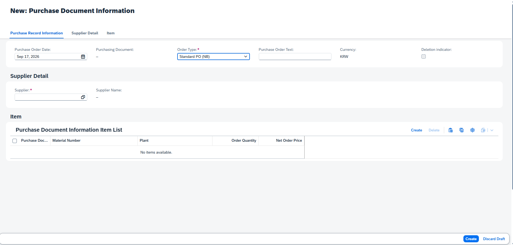
구매 문서 헤더 입력
문서 유형과 구매오더 일자 등 헤더 정보를 입력합니다.

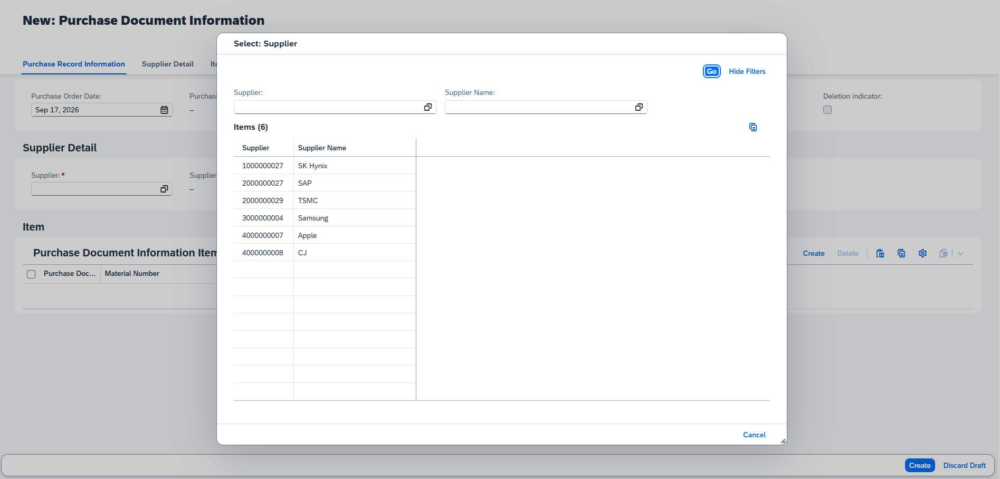
구매오더 공급업체 선택
공급업체 마스터의 검색 도움말에서 거래처를 선택합니다.
관련 구현
문서 유형별 구매오더 번호 범위코드 보기
문서 유형별 구매오더 번호 범위
문서 유형을 번호 범위에 매핑하고 공통 채번 클래스를 호출합니다.
CASE lv_bsart.
WHEN 'NB'.
lv_numberrange = '45'.
WHEN 'NB2'.
lv_numberrange = '49'.
WHEN 'NB2C'.
lv_numberrange = '50'.
WHEN 'UB'.
lv_numberrange = '41'.
ENDCASE.
zcl_a18_numbering=>lifnr_numebring(
EXPORTING
iv_nr_object = 'ZA18EBELN'
iv_nr_range = lv_numberrange
IMPORTING
ev_number = DATA(lv_ebeln)
).
APPEND VALUE #( %tky = ls_read_result-%tky
ebeln = lv_ebeln
) TO lt_update.구매정보와 자재를 품목에 연결
품목에서 구매정보 레코드와 자재 마스터를 검색합니다. 플랜트에 종속된 저장위치 검색도 같은 Projection에서 선언합니다.

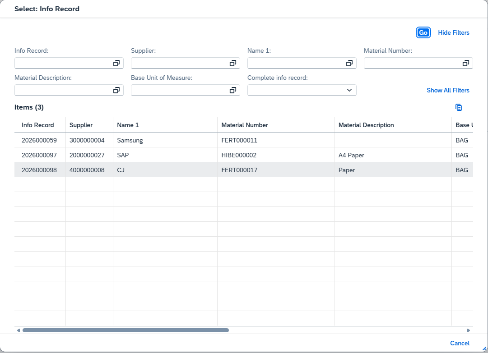
구매정보 레코드 선택
품목에서 사용할 구매정보 번호를 공급업체·자재 정보와 함께 검색합니다.
상세 화면과 처리 과정 보기 · 1장

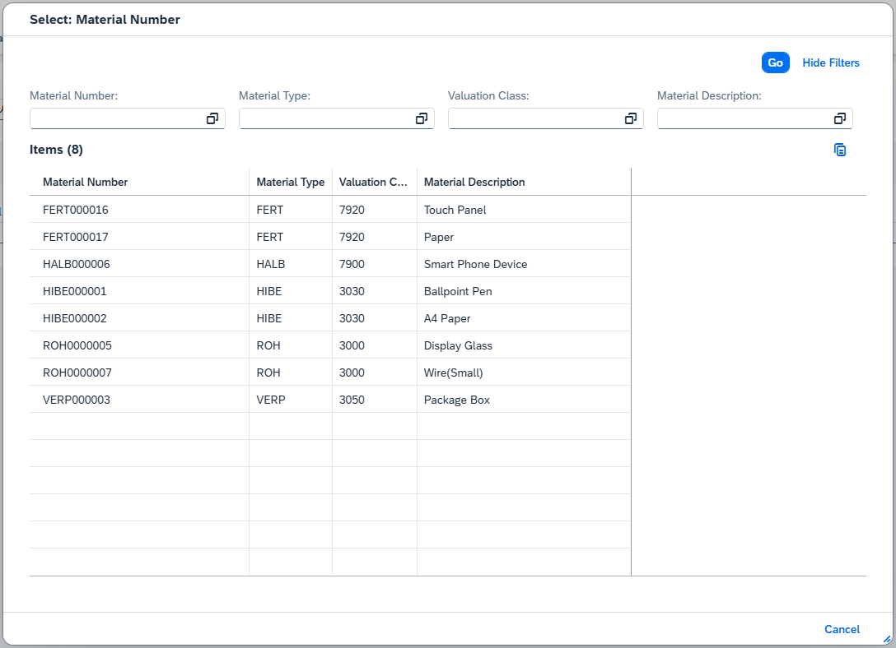
구매 품목의 자재 선택
자재 검색 도움말에서 품목에 사용할 자재를 선택합니다.
관련 구현
구매 품목의 검색 도움말과 종속 저장위치코드 보기
구매 품목의 검색 도움말과 종속 저장위치
품목의 검색 도움말을 연결하고 저장위치에는 플랜트를 필터와 결과 바인딩으로 전달합니다.
define view entity ZC_A18_EKPO
as projection on ZI_A18_EKPO
{
key EbelnUuid,
key Ebelp,
@Consumption.valueHelpDefinition: [{
entity: {
name: 'zi_a18_matnr_f4',
element: 'Matnr'
}
}]
@ObjectModel.text.element: [ 'MatnrText' ]
@UI.textArrangement: #TEXT_FIRST
Matnr,
@Semantics.text: true
MatnrText,
Txz01,
@Consumption.valueHelpDefinition: [{
entity: {
name: 'zi_a18_mtart_f4',
element: 'MaterialType'
}
}]
@ObjectModel.text.element: [ 'MtartText' ]
@UI.textArrangement: #TEXT_FIRST
Mtart,
@Semantics.text: true
MtartText,
@Consumption.valueHelpDefinition: [{
entity: {
name: 'ZI_A18_INFNR_F4',
element: 'Infnr'
}
}]
Infnr,
@Consumption.valueHelpDefinition: [{
entity: {
name: 'ZI_A18_WERKS_F4',
element: 'Werks'
}
}]
@ObjectModel.text.element: [ 'WerksText' ]
@UI.textArrangement: #TEXT_FIRST
Werks,
@Semantics.text: true
WerksText,
@Consumption.valueHelpDefinition: [{
entity: {
name: 'ZI_A18_LGORT_F4',
element: 'Lgort'
},
additionalBinding: [{
element: 'Werks',
localElement: 'Werks',
usage: #FILTER_AND_RESULT
}]
}]
@ObjectModel.text.element: [ 'LgortText' ]
@UI.textArrangement: #TEXT_FIRST
Lgort,
@Semantics.text: true
LgortText,
@Semantics.quantity.unitOfMeasure: 'Meins'
Menge,
@Semantics.unitOfMeasure: true
Meins,
@Semantics.amount.currencyCode: 'Waers'
Netpr,
@Semantics.currencyCode: true
Waers,
Loekz,
Elikz,
Erekz,
@Semantics.user.createdBy: true
CreatedBy,
@Semantics.systemDateTime.createdAt: true
CreationAt,
@Semantics.user.lastChangedBy: true
ChangedBy,
@Semantics.systemDateTime.lastChangedAt: true
ChangedAt,
@Semantics.systemDateTime.localInstanceLastChangedAt: true
LocChangedAt,
/* Associations */
_Ekko : redirected to parent ZC_A18_EKKO,
_Infnr,
_Lgort,
_Matnr,
_Mtart,
_Werks
}품목 생성부터 전체 문서 저장까지
품목번호 10의 생성·편집부터 헤더의 품목 목록, 저장된 문서와 목록 반영까지 순서대로 볼 수 있습니다. Early Numbering은 부모별 최댓값에 10을 더해 품목번호를 배정합니다.

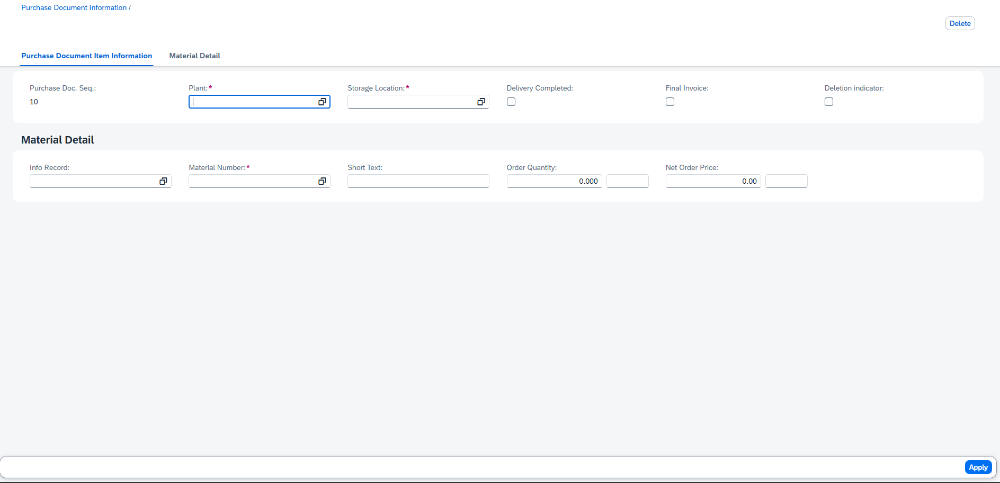
품목 생성
품목번호 10이 표시된 생성 화면에서 플랜트와 자재 정보를 입력합니다.
상세 화면과 처리 과정 보기 · 4장

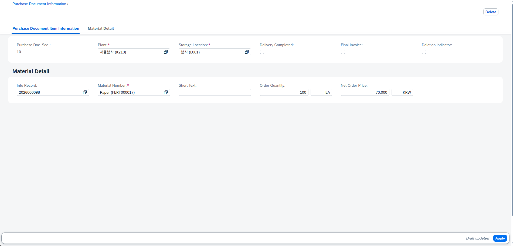
품목 상세 편집
품목번호·플랜트·저장위치와 수량·금액 등 품목 정보를 편집합니다.

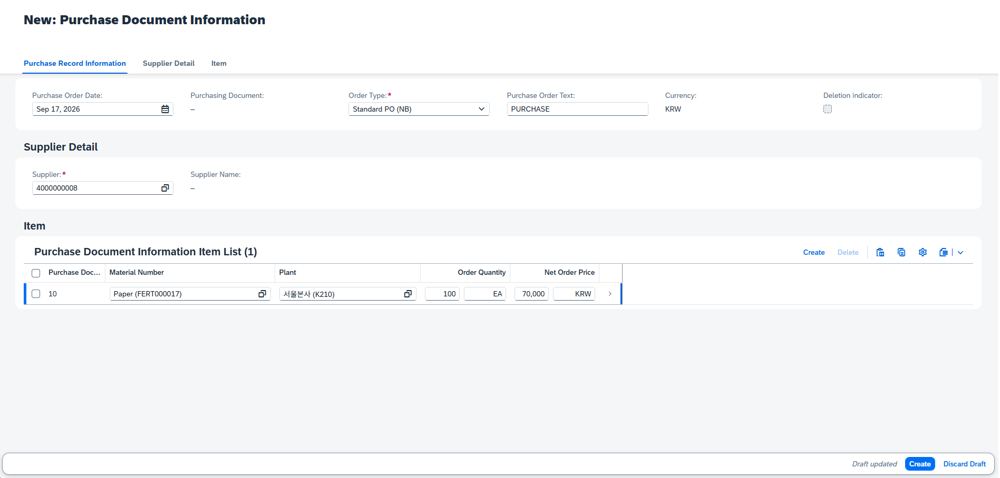
헤더와 품목의 저장 전 검토
품목이 연결된 문서 전체를 확인한 뒤 Create로 저장합니다.

구매오더 저장 결과
문서 4500000064 아래 공급업체와 품목번호 10, 수량·금액이 연결된 모습입니다.

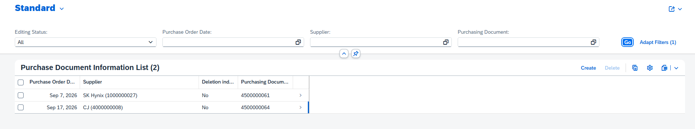
저장 후 목록
생성한 구매 문서가 목록에 반영된 화면입니다.
관련 구현
부모별 품목번호 Early Numbering코드 보기
부모별 품목번호 Early Numbering
같은 요청에서 추가되는 여러 품목도 서로 다른 번호를 받도록 목록을 갱신합니다.
METHOD earlynumbering_cba_Ekpo.
DATA : lv_new_ebelp TYPE zea18ebelp.
READ ENTITIES OF zr_a18_ekko IN LOCAL MODE
ENTITY PurchaseHeader BY \_Ekpo
FIELDS ( Ebelp )
WITH CORRESPONDING #( entities )
RESULT DATA(read_result).
LOOP AT entities INTO DATA(ls_parent).
LOOP AT ls_parent-%target INTO DATA(ls_target).
IF ls_target-Ebelp IS INITIAL.
DATA(lv_max_ebelp) = REDUCE zea18ebelp(
INIT Max = 0
FOR ls_read_result IN read_result USING KEY entity
WHERE ( EbelnUuid = ls_parent-EbelnUuid )
NEXT Max = COND #(
WHEN ls_read_result-Ebelp > Max
THEN ls_read_result-Ebelp
ELSE Max
)
).
lv_new_ebelp = lv_max_ebelp + 10.
APPEND VALUE #( EbelnUuid = ls_parent-EbelnUuid
Ebelp = lv_new_ebelp
) TO read_result.
ELSE.
lv_new_ebelp = ls_target-Ebelp.
ENDIF.
APPEND VALUE #( %cid = ls_target-%cid
%is_draft = ls_target-%is_draft
EbelnUuid = ls_parent-EbelnUuid
Ebelp = lv_new_ebelp
) TO mapped-purchaseitem.
ENDLOOP.
ENDLOOP.
ENDMETHOD.공급업체 마스터
공급업체 정보와 조정계정을 연결하는 화면입니다.
- 01목록 조회
- 02그룹 선택
- 03번호 범위 결정
- 04조정계정 연결
- 05상세·결과 확인
공급업체 목록
그룹·공급업체·조정계정·비활성 상태를 검색 조건과 목록 열로 구성합니다.

공급업체 목록
그룹, 공급업체 번호, 조정계정과 비활성 상태를 조회합니다.
관련 구현
공급업체 목록의 검색 조건과 열코드 보기
공급업체 목록의 검색 조건과 열
그룹·공급업체 검색 조건과 조정계정·비활성 상태 열을 구성합니다.
annotate entity ZC_A18_LFA1 with
{
@UI: { selectionField: [{ element: 'Fdgrv', position: 10 }],
lineItem: [{ position: 10, importance: #HIGH }]
}
Fdgrv;
@UI: { selectionField: [{ element: 'Lifnr', position: 20 }],
lineItem: [{ position: 20, importance: #HIGH }]
}
Lifnr;
@UI: { lineItem: [{ position: 30, importance: #HIGH }]
}
Akont;
@UI: { lineItem: [{ position: 40, importance: #HIGH, label: 'Inactivated' }]
}
Loekz;
}그룹 선택과 공급업체 번호 생성
생성 팝업에서 그룹을 선택하고 저장 후 번호를 확인합니다. 해당 그룹의 내부 번호 범위를 설정 테이블에서 읽어 채번에 사용합니다.

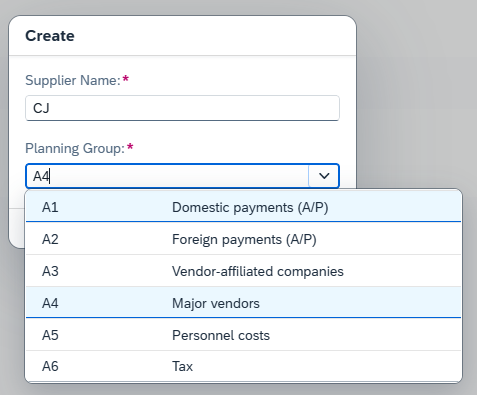
공급업체 그룹 선택
공급업체명과 Planning Group을 지정합니다. 그룹은 번호 범위 선택의 기준으로 사용됩니다.
상세 화면과 처리 과정 보기 · 2장

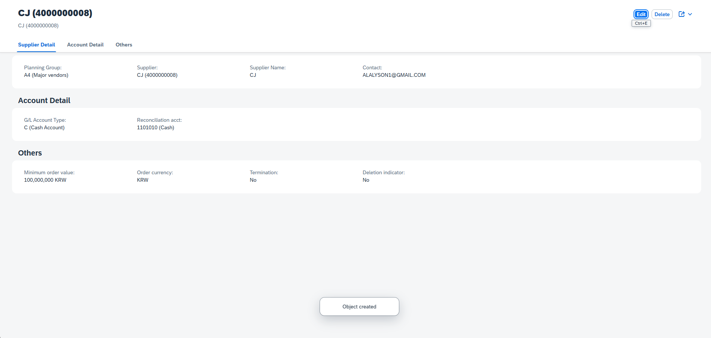
저장된 공급업체 상세
생성된 공급업체 번호와 그룹, 조정계정을 상세 화면에서 확인합니다.

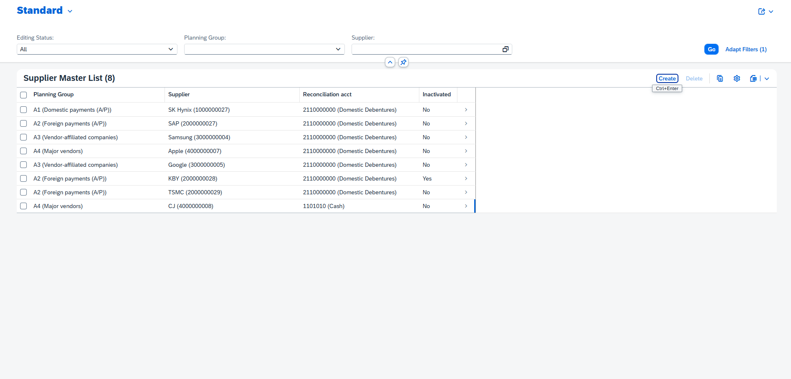
공급업체 생성 결과
새 공급업체 CJ와 배정된 번호·조정계정이 목록에 표시됩니다.
관련 구현
공급업체 그룹별 채번 규칙코드 보기
공급업체 그룹별 채번 규칙
그룹별 번호 범위를 설정 테이블에서 조회하는 구현입니다.
SELECT SINGLE int_nr
FROM zta18lfa1_num
WHERE fdgrv = @ls_read_result-Fdgrv
INTO @DATA(lv_number).
IF sy-subrc = 0.
TRY.
zcl_a18_numbering=>lifnr_numebring(
EXPORTING
iv_nr_object = 'ZNR_A18_LI'
iv_nr_range = lv_number
IMPORTING
ev_number = DATA(lv_new_lifnr)
).
APPEND VALUE #( %tky = ls_read_result-%tky
%control-Lifnr = if_abap_behv=>mk-on
Lifnr = lv_new_lifnr
) TO lt_update.조정계정 선택
공급업체의 Akont 필드에 계정 마스터 검색 도움말을 연결합니다.

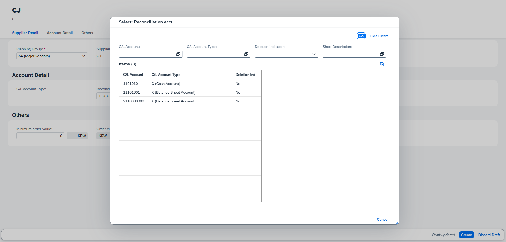
조정계정 검색 도움말
계정 마스터에서 생성한 계정을 검색하고 선택합니다.
관련 구현
공급업체의 조정계정 검색 도움말코드 보기
공급업체의 조정계정 검색 도움말
조정계정 필드에 계정 검색 도움말을 연결하고 계정 설명을 함께 표시합니다.
define root view entity ZC_A18_LFA1
provider contract transactional_query
as projection on ZR_A18_LFA1
{
key LifUuid,
@ObjectModel.text.element: [ 'Name1' ]
@UI.textArrangement: #TEXT_FIRST
Lifnr,
@Semantics.text: true
@EndUserText.label: 'Supplier Name'
Name1,
Waers,
@Semantics.amount.currencyCode: 'Waers'
Minbw,
@ObjectModel.text.element: [ 'FdgrvText' ]
@Consumption.valueHelpDefinition: [{
entity: {
name: 'ZI_A18_FDGRV_F4',
element: 'Fdgrv'
}
}]
@UI.textArrangement: #TEXT_LAST
Fdgrv,
@Consumption.valueHelpDefinition: [{
entity: {
name: 'ZI_A18_SAKNR_F4',
element: 'Saknr'
}
}]
@ObjectModel.text.element: [ 'AkontText' ]
@UI.textArrangement: #TEXT_LAST
Akont,
@Semantics.text: true
AkontText,
Loevm,
Email,
Loekz,
@ObjectModel.text.element: [ 'GlactText' ]
@UI.textArrangement: #TEXT_LAST
Glact,
@Semantics.text: true
GlactText,
_Account.Mitkz as Mitkz,
@Semantics.text: true
_Group.Text30 as FdgrvText,
@Semantics.user.createdBy: true
CreatedBy,
@Semantics.systemDateTime.createdAt: true
CreationAt,
@Semantics.user.lastChangedBy: true
ChangedBy,
@Semantics.systemDateTime.lastChangedAt: true
ChangedAt,
@Semantics.systemDateTime.localInstanceLastChangedAt: true
LocChangedAt,
_Account,
_Group
}계정 마스터
계정 유형과 언어별 계정명을 관리합니다.
- 01계정 유형 선택
- 02계정 정보 입력
- 03언어별 이름
- 04저장 결과 조회
- 05사용 중지
계정 목록과 사용 중지
목록의 계정 유형·계정번호와 Inactivate 버튼을 선언하고, 연결된 Action에서 사용 중지 상태를 갱신합니다.

계정 목록
계정 유형과 G/L 계정으로 등록 데이터를 조회합니다.
상세 화면과 처리 과정 보기 · 1장

계정 생성 후 조회
추가된 계정 11101001을 목록에서 확인합니다.
관련 구현
계정 목록과 Inactivate 버튼코드 보기
계정 목록과 Inactivate 버튼
계정 유형·계정번호를 목록에 표시하고 Inactivate 버튼을 Action과 연결합니다.
annotate entity zc_a18_ska1 with
{
@UI: { selectionField: [{ element: 'Glact', position: 10 }],
lineItem: [{ position: 10, importance: #HIGH, label: 'Account Type' },
{ type: #FOR_ACTION, dataAction: 'set_stop_account', label: 'Inactivate' }
]
}
Glact;
@UI: { selectionField: [{ element: 'Saknr', position: 20 }],
lineItem: [{ position: 20, importance: #HIGH, label: 'Account' }]
}
Saknr;
@UI.hidden: true
SakUuid;
@UI.hidden: true
CreatedBy;
@UI.hidden: true
CreationAt;
@UI.hidden: true
ChangedAt;
@UI.hidden: true
ChangedBy;
}계정 사용 중지 Action코드 보기
계정 사용 중지 Action
선택한 계정의 상태 변경을 명시적 업무 Action으로 제공합니다.
METHOD set_stop_account.
MODIFY ENTITIES OF zr_a18_ska1 IN LOCAL MODE
ENTITY SaknrHeader
UPDATE FIELDS ( Loekz )
WITH VALUE #(
FOR key IN keys (
%tky = key-%tky
Loekz = 'X'
)
).
READ ENTITIES OF zr_a18_ska1 IN LOCAL MODE
ENTITY SaknrHeader
ALL FIELDS
WITH CORRESPONDING #( keys )
RESULT DATA(read_result).
result = VALUE #( FOR ls_read_result IN read_result
( %tky = ls_read_result-%tky
%param = ls_read_result
)
).
ENDMETHOD.계정 상세와 언어별 계정명
계정 유형 선택, 언어별 이름 입력·편집, 저장된 상세 화면을 순서대로 확인합니다. 계정과 텍스트는 Composition으로 연결합니다.

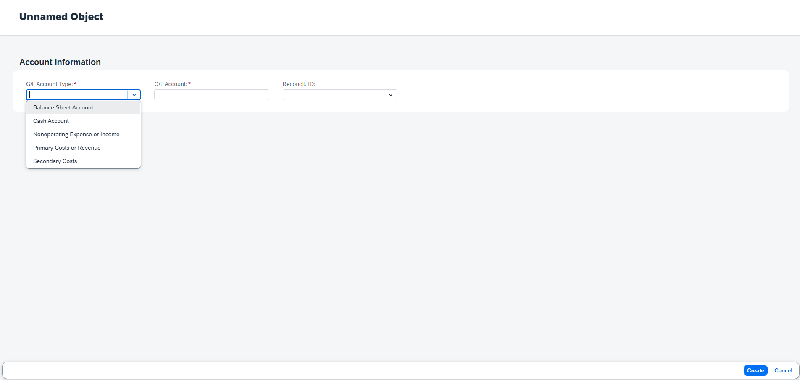
계정 유형 선택
계정 생성 화면에서 계정 유형과 계정 정보를 지정합니다.
상세 화면과 처리 과정 보기 · 3장

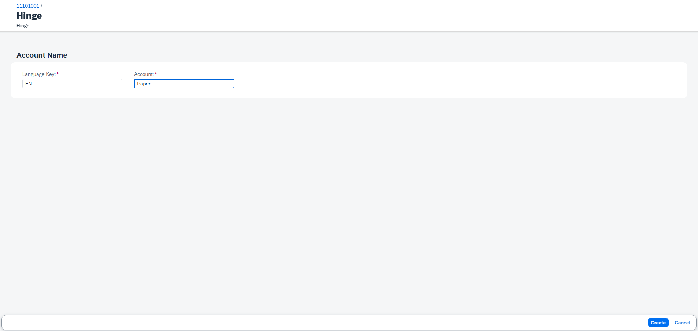
언어별 계정명 입력
언어 항목의 상세 화면에서 계정명을 입력합니다.

계정명 편집
계정의 언어별 이름을 편집하는 화면입니다.

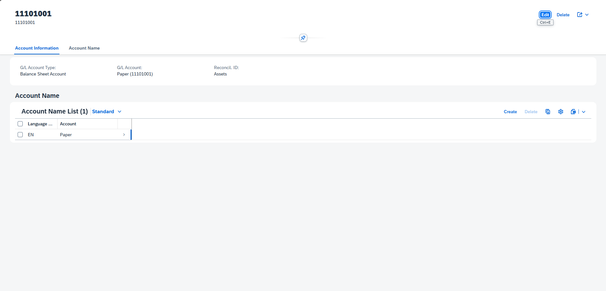
저장된 계정 상세
생성한 계정의 기본 정보와 한국어·영어 계정명 목록을 확인합니다.
관련 구현
계정과 언어별 계정명의 관계코드 보기
계정과 언어별 계정명의 관계
계정에 여러 언어의 텍스트를 연결하고 접속 언어에 맞는 설명을 조회합니다.
define root view entity zr_a18_ska1
as select from ZI_A18_SKA1
composition [0..*] of zi_a18_ska1_t as _SaknrText
association [0..1] to zi_a18_ska1_t as _SaknrDesc on $projection.SakUuid = _SaknrDesc.SakUuid
and _SaknrDesc.Spras = $session.system_language
association [0..1] to ZI_A18_GLACT_F4 as _GlactText on $projection.Glact = _GlactText.Glact
{
key SakUuid,
Saknr,
Glact,
Mitkz,
Loekz,
@Semantics.user.createdBy: true
CreatedBy,
@Semantics.systemDateTime.createdAt: true
CreationAt,
@Semantics.user.lastChangedBy: true
ChangedBy,
@Semantics.systemDateTime.lastChangedAt: true
ChangedAt,
/* Associtaions */
_SaknrText,
_SaknrDesc,
_GlactText
}계정결정 기준
이동유형·거래키·평가클래스와 계정을 연결합니다.
- 01이동유형 선택
- 02거래키 지정
- 03평가클래스·계정
- 04순번 생성
- 05등록 결과 조회
계정결정 조건 입력
이동유형·거래키·평가클래스와 계정을 연결합니다. 각 조건의 검색 도움말 및 계정 유형 결과 바인딩을 함께 확인합니다.

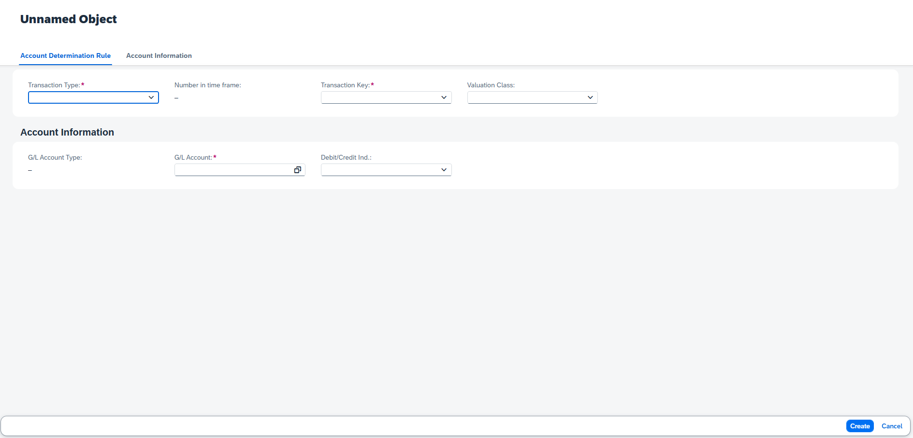
계정결정 기준 생성 화면
이동유형과 계정결정 조건을 입력하는 상세 화면입니다.
상세 화면과 처리 과정 보기 · 1장

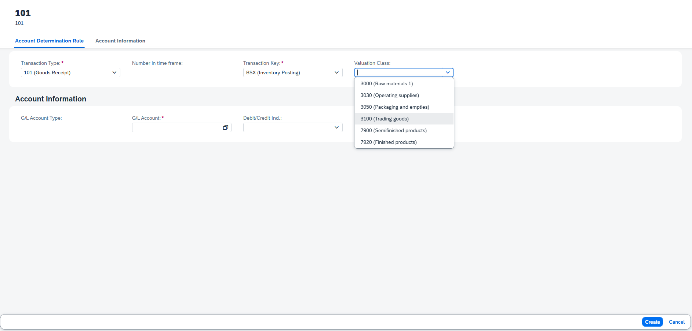
거래키와 차변·대변 구분
이동유형에 연결할 거래키·평가클래스·계정과 차변·대변 구분을 설정합니다.
관련 구현
계정결정 조건과 계정 검색 도움말코드 보기
계정결정 조건과 계정 검색 도움말
계정결정 조건의 검색 도움말과 텍스트를 연결하고 선택 계정의 계정 유형을 결과 바인딩으로 받습니다.
define root view entity ZC_A18_T030
provider contract transactional_query
as projection on ZR_A18_T030
{
@Consumption.valueHelpDefinition: [{
entity: { name: 'ZI_A18_BWART_F4',
element: 'Bwart'
}
}]
@ObjectModel.text.element: [ 'BwartText' ]
@UI.textArrangement: #TEXT_LAST
key Bwart,
key Seqnr,
@Semantics.text: true
BwartText,
@ObjectModel.text.element: [ 'KtoslText' ]
@UI.textArrangement: #TEXT_LAST
@Consumption.valueHelpDefinition: [{
entity:{ name: 'ZI_A18_KTOSL_F4',
element: 'Ktosl'
}
}]
Ktosl,
@Semantics.text: true
_Ktosl.KtoslText as KtoslText,
@ObjectModel.text.element: [ 'Bkbez' ]
@UI.textArrangement: #TEXT_LAST
@Consumption.valueHelpDefinition: [{
entity: { name: 'ZI_A18_BKLAS_F4',
element: 'Bklas'
}
}]
Bklas,
@Semantics.text: true
_Bklas.Bkbez as Bkbez,
@ObjectModel.text.element: [ 'GlactText' ]
@UI.textArrangement: #TEXT_LAST
Glact,
@Semantics.text: true
GlactText,
@Consumption.valueHelpDefinition: [{
entity: {
name: 'ZI_A18_SAKNR_F4',
element: 'Saknr'
},
additionalBinding: [{
localElement: 'Glact',
element: 'Glact',
usage: #RESULT
}]
}]
@ObjectModel.text.element: [ 'SaknrText' ]
@UI.textArrangement: #TEXT_LAST
Saknr,
@Semantics.text: true
SaknrText,
@ObjectModel.text.element: [ 'ShkzgText' ]
@UI.textArrangement: #TEXT_LAST
@Consumption.valueHelpDefinition: [{
entity:{ name: 'ZI_A18_SHKZG',
element: 'Shkzg'
}
}]
Shkzg,
@Semantics.text: true
_Shkzg.ShkzgText as ShkzgText,
@Semantics.user.createdBy: true
CreatedBy,
@Semantics.systemDateTime.createdAt: true
CreationAt,
@Semantics.user.lastChangedBy: true
ChangedBy,
@Semantics.systemDateTime.lastChangedAt: true
ChangedAt,
@Semantics.systemDateTime.localInstanceLastChangedAt: true
LocChangedAt,
/* Associations */
_Account,
_Bwart,
_Ktosl,
_Bklas,
_Shkzg
}순번 생성과 등록 결과
생성 시 이동유형별 순번을 계산해 mapped에 반환합니다. 상세 저장 결과와 목록을 함께 볼 수 있습니다.

계정결정 기준 생성
이동유형 101의 순번과 연결 계정 정보가 저장된 화면입니다.
상세 화면과 처리 과정 보기 · 2장

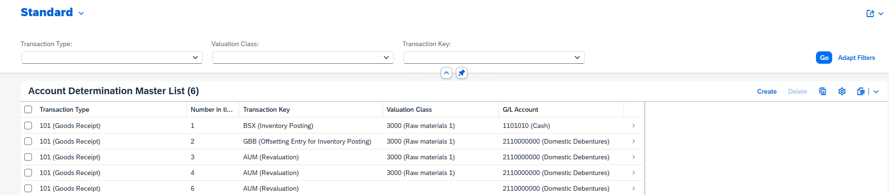
계정결정 기준 목록
이동유형과 거래키에 연결된 평가클래스·G/L 계정을 조회합니다.

등록 결과 조회
추가한 계정결정 기준을 목록에서 확인합니다.
관련 구현
이동유형별 순번 Early Numbering코드 보기
이동유형별 순번 Early Numbering
복합 업무 키의 순번을 생성 시점에 매핑하는 구현입니다.
METHOD earlynumbering_create.
LOOP AT entities INTO DATA(ls_entity).
SELECT SINGLE FROM zta18t030
FIELDS MAX( seqnr )
WHERE bwart = @ls_entity-Bwart
INTO @DATA(lv_max_seqnr).
IF sy-subrc <> 0.
EXIT.
ENDIF.
DATA(lv_seqnr) = lv_max_seqnr + 1.
APPEND VALUE #( %cid = ls_entity-%cid
bwart = ls_entity-Bwart
seqnr = lv_seqnr
) TO mapped-obyc.
ENDLOOP.
ENDMETHOD.공급업체 그룹 설정
싱글톤 Root 아래에서 공급업체 그룹과 언어별 설명을 함께 관리합니다.
- 01싱글톤 진입
- 02설정 항목 편집
- 03Draft 관리
- 04전송요청 선택
- 05변경 검증
싱글톤 진입 화면
SingletonID가 1인 한 개의 Root에서 공급업체 그룹 설정 항목 전체로 진입합니다.

싱글톤 목록
SingletonID 1과 Draft 상태가 표시된 진입 화면입니다.
관련 구현
싱글톤 Root와 설정 항목 Composition코드 보기
싱글톤 Root와 설정 항목 Composition
고정 키 1의 싱글톤 Root 아래에 공급업체 그룹 설정을 모으고, 최종 변경 시각을 집계합니다.
define root view entity ZI_A18SupplierGroupTab_S
as select from I_Language
left outer join ZTA18FDGRV_F on 0 = 0
composition [0..*] of ZI_A18SupplierGroupTab as _A18SupplierGroupTab
{
key 1 as SingletonID,
_A18SupplierGroupTab,
max( ZTA18FDGRV_F.CHANGED_AT ) as LastChangedAtMax,
cast( '' as SXCO_TRANSPORT) as TransportRequestID,
cast( 'X' as ABAP_BOOLEAN preserving type) as HideTransport
}
where I_Language.Language = $session.system_language공급업체 그룹 설정과 Draft 편집
싱글톤 아래에서 그룹·언어별 설명을 함께 편집합니다. 부모 연결과 Draft·잠금, Select Transport 선언을 확인합니다.

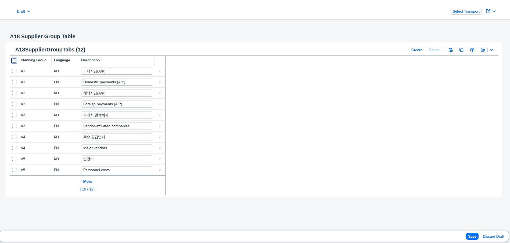
공급업체 그룹 설정 편집
싱글톤 상세에서 그룹별 한국어·영어 설명을 편집하고 Save·Discard Draft·Select Transport를 사용할 수 있습니다.
관련 구현
공급업체 그룹과 다국어 설명코드 보기
공급업체 그룹과 다국어 설명
그룹과 언어를 키로 사용해 한국어·영어 설명을 관리합니다.
define view entity ZI_A18SupplierGroupTab
as select from ZTA18FDGRV_F
association to parent ZI_A18SupplierGroupTab_S as _A18SupplierGroupAll on $projection.SingletonID = _A18SupplierGroupAll.SingletonID
{
key FDGRV as Fdgrv,
key SPRAS as Spras,
TEXT30 as Text30,
CONFIGDEPRECATIONCODE as ConfigDeprecationCode,
@Semantics.user.createdBy: true
CREATED_BY as CreatedBy,
@Semantics.systemDateTime.createdAt: true
CREATION_AT as CreationAt,
@Semantics.user.lastChangedBy: true
CHANGED_BY as ChangedBy,
@Semantics.systemDateTime.lastChangedAt: true
CHANGED_AT as ChangedAt,
@Semantics.systemDateTime.localInstanceLastChangedAt: true
LOC_CHANGED_AT as LocChangedAt,
1 as SingletonID,
_A18SupplierGroupAll
}싱글톤과 자식 설정의 Draft·잠금·전송요청코드 보기
싱글톤과 자식 설정의 Draft·잠금·전송요청
싱글톤 Root에서 Draft와 잠금을 관리하고, 자식 항목의 생성·수정·삭제와 전송요청 검증을 연결합니다.
managed with additional save implementation in class ZBP_I_A18SUPPLIERGROUPTAB_S unique;
strict;
with draft;
define behavior for ZI_A18SupplierGroupTab_S alias A18SupplierGroupAll
draft table ZTA18FDGRV_F_D_S
with unmanaged save
lock master total etag LastChangedAtMax
authorization master( global )
{
field ( readonly )
SingletonID;
update;
internal create;
internal delete;
draft action ( features : instance ) Edit;
draft action Activate optimized;
draft action Discard;
draft action Resume;
draft determine action Prepare;
action ( features : instance ) SelectCustomizingTransptReq parameter D_SelectCustomizingTransptReqP result [1] $self;
association _A18SupplierGroupTab { create ( features : instance ); with draft; }
}
define behavior for ZI_A18SupplierGroupTab alias A18SupplierGroupTab
persistent table ZTA18FDGRV_F
draft table ZTA18FDGRV_F_D
etag master LocChangedAt
lock dependent by _A18SupplierGroupAll
authorization dependent by _A18SupplierGroupAll
{
field ( mandatory : create )
Fdgrv,
Spras;
field ( readonly )
SingletonID,
CreatedBy,
CreationAt,
ChangedBy,
ChangedAt,
LocChangedAt;
field ( readonly : update )
Fdgrv,
Spras;
update( features : global );
delete( features : global );
mapping for ZTA18FDGRV_F
{
Fdgrv = FDGRV;
Spras = SPRAS;
Text30 = TEXT30;
ConfigDeprecationCode = CONFIGDEPRECATIONCODE;
CreatedBy = CREATED_BY;
CreationAt = CREATION_AT;
ChangedBy = CHANGED_BY;
ChangedAt = CHANGED_AT;
LocChangedAt = LOC_CHANGED_AT;
}
association _A18SupplierGroupAll { with draft; }
validation ValidateTransportRequest on save ##NOT_ASSIGNED_TO_DETACT { create; update; delete; }
}싱글톤 상세 화면과 전송요청 버튼코드 보기
싱글톤 상세 화면과 전송요청 버튼
싱글톤 상세 화면에 자식 설정 테이블을 표시하고 Select Transport 버튼을 Action에 연결합니다.
annotate view ZC_A18SupplierGroupTab_S with
{
@UI.facet: [ {
id: 'Transport',
purpose: #STANDARD,
type: #IDENTIFICATION_REFERENCE,
label: 'Transport',
position: 1 ,
hidden: #(HideTransport)
},
{
id: 'ZI_A18SupplierGroupTab',
purpose: #STANDARD,
type: #LINEITEM_REFERENCE,
label: ' A18 Supplier Group Table',
position: 2 ,
targetElement: '_A18SupplierGroupTab'
} ]
@UI.lineItem: [ {
position: 1
} ]
SingletonID;
@UI.hidden: true
HideTransport;
@UI.identification: [ {
position: 2 ,
importance: #HIGH
},
{
type: #FOR_ACTION,
dataAction: 'SelectCustomizingTransptReq',
label: 'Select Transport'
} ]
TransportRequestID;
}그룹·언어·설명의 목록과 편집 필드코드 보기
그룹·언어·설명의 목록과 편집 필드
공급업체 그룹, 언어, 설명을 목록 열과 상세 필드에 배치합니다.
annotate view ZC_A18SupplierGroupTab with
{
@UI.identification: [ {
position: 1
} ]
@UI.lineItem: [ {
position: 1
} ]
@UI.facet: [ {
id: 'ZI_A18SupplierGroupTab',
purpose: #STANDARD,
type: #IDENTIFICATION_REFERENCE,
label: ' A18 Supplier Group Table',
position: 1
} ]
Fdgrv;
@UI.identification: [ {
position: 2
} ]
@UI.lineItem: [ {
position: 2
} ]
Spras;
@UI.identification: [ {
position: 3
} ]
@UI.lineItem: [ {
position: 3
} ]
Text30;
@UI.identification: [ {
position: 4
} ]
@UI.lineItem: [ {
position: 4
} ]
ConfigDeprecationCode;
@UI.identification: [ {
position: 5
} ]
CreatedBy;
@UI.identification: [ {
position: 6
} ]
CreationAt;
@UI.identification: [ {
position: 7
} ]
ChangedBy;
@UI.identification: [ {
position: 8
} ]
ChangedAt;
}전송요청 선택과 설정 변경 검증
거래키(KTOSL) 설정에서 캡처한 추가 예시입니다. 전송요청 선택·검색·적용과 설정 항목 추가를 보여주며, 이 화면에 해당하는 Action과 검증 메서드를 연결했습니다.

거래키 설정 · 전송요청 선택
거래키(KTOSL) 설정 화면에서 Select Transport를 실행한 예시입니다.
상세 화면과 처리 과정 보기 · 3장

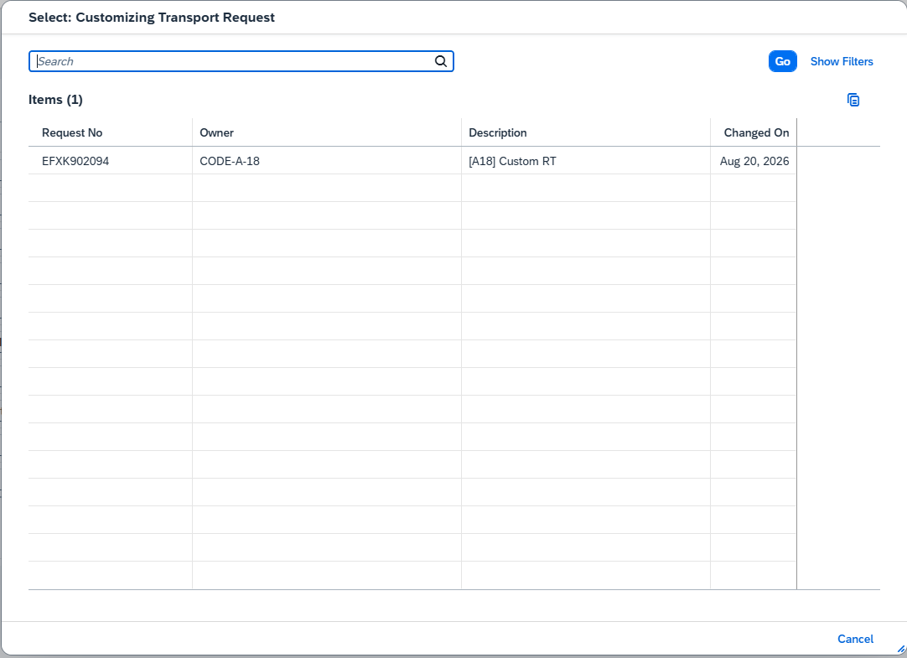
사용 가능한 전송요청 검색
전송요청 번호와 설명을 조회해 설정 변경을 기록할 요청을 선택합니다.

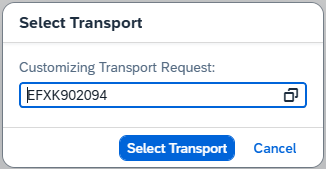
선택한 전송요청 적용
선택한 번호를 Select Transport로 설정 항목의 편집 흐름에 적용합니다.

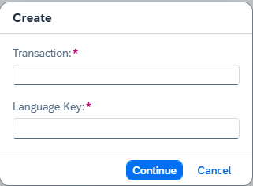
거래키 설정 항목 추가
Transaction과 언어 키를 입력해 새로운 설정 항목을 추가합니다.
관련 구현
거래키 설정의 전송요청 선택 Action코드 보기
거래키 설정의 전송요청 선택 Action
Action 파라미터의 전송요청 번호를 싱글톤 Root에 반영하고 변경 결과를 반환합니다.
METHOD SELECTCUSTOMIZINGTRANSPTREQ.
MODIFY ENTITIES OF ZI_A18KtoslFilterTable_S IN LOCAL MODE
ENTITY A18KtoslFilterTaAll
UPDATE FIELDS ( TransportRequestID HideTransport )
WITH VALUE #( FOR key IN keys
( %TKY = key-%TKY
TransportRequestID = key-%PARAM-transportrequestid
HideTransport = abap_false ) ).
READ ENTITIES OF ZI_A18KtoslFilterTable_S IN LOCAL MODE
ENTITY A18KtoslFilterTaAll
ALL FIELDS WITH CORRESPONDING #( keys )
RESULT DATA(entities).
result = VALUE #( FOR entity IN entities
( %TKY = entity-%TKY
%PARAM = entity ) ).
ENDMETHOD.거래키 설정 변경의 전송요청 검증코드 보기
거래키 설정 변경의 전송요청 검증
Draft Root의 전송요청을 읽어 변경 검증에 전달하고 reported와 failed를 연결합니다.
METHOD VALIDATETRANSPORTREQUEST.
DATA change TYPE REQUEST FOR CHANGE ZI_A18KtoslFilterTable_S.
SELECT SINGLE TransportRequestID
FROM ZTA18KTOSL_F_D_S
WHERE SingletonID = 1
INTO @DATA(TransportRequestID).
lhc_rap_tdat_cts=>get( )->validate_changes(
transport_request = TransportRequestID
table = 'ZTA18KTOSL_F'
keys = REF #( keys )
reported = REF #( reported )
failed = REF #( failed )
change = REF #( change-A18KtoslFilterTable ) ).
ENDMETHOD.RAP 아키텍처
자재 마스터를 기준으로 데이터 모델부터 서비스 노출까지 연결한 구조입니다.
Persistence
업무 데이터와 임시 편집 데이터를 각각 보관합니다.
영속 테이블 / Draft 테이블02CDS Model
Root와 텍스트 자식의 관계, 언어별 조회를 정의합니다.
자재 Root / 다국어 텍스트03Behavior
생성·수정, 검증·채번·Action의 실행 시점을 정합니다.
동작 정의 / EML04Projection
공개 필드, 검색 도움말과 UI Annotation을 구성합니다.
공개 모델 / 화면 구성05Service
부모와 텍스트 엔티티를 서비스로 노출합니다.
자재·텍스트 서비스기술 키 MatUuid는 managed numbering으로 생성하고, 업무 번호 Matnr는 별도 채번 로직에서 생성합니다. 두 번호의 역할과 생성 방식을 구분했습니다.